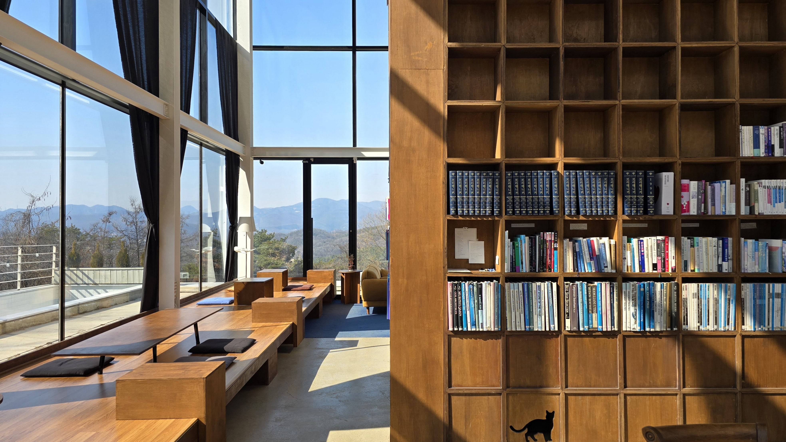
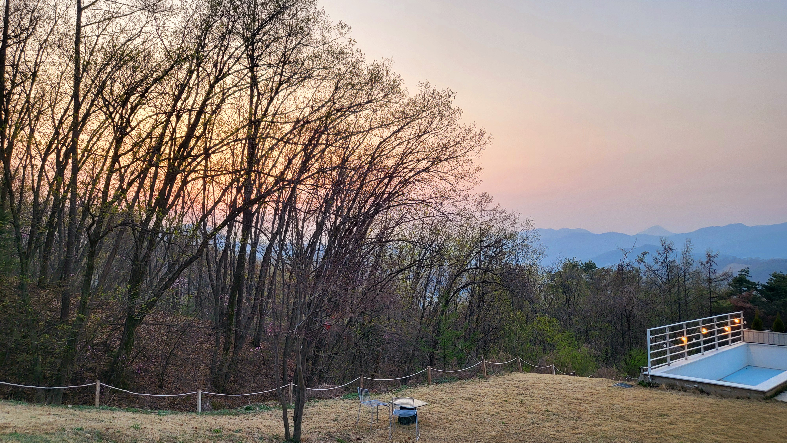
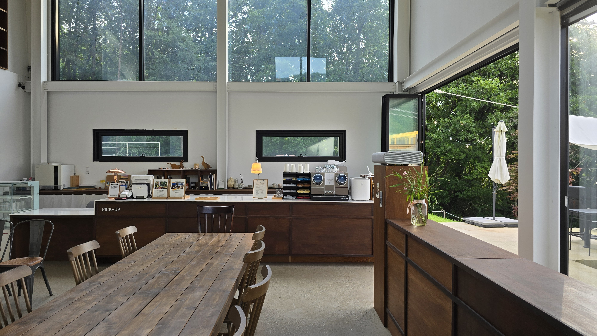

Gonjiam, Gwangju · Stay, Lounge, Events
머무름이 장면이 되는 공간, 아크풀리
광주 곤지암의 자연 속에서 하루 숙박도, 가벼운 라운지 방문도, 촬영과 행사를 위한 대관도 한 공간 안에서 이어집니다. 조용히 쉬고 싶을 때와 중요한 장면을 준비할 때 모두 자연스럽게 어울리는 흐름으로 준비했습니다.
Programs
머무는 방식에 따라, 원하는 공간부터 편하게 둘러보세요.



창밖의 자연과 함께, 쉬는 시간도 특별한 순간도 편안하게 머무는 공간.
큰 창 너머로 보이는 풍경과 부드럽게 들어오는 자연광이 아크풀리의 분위기를 만듭니다. 혼자 조용히 쉬고 싶을 때도, 가까운 사람과 천천히 시간을 보내고 싶을 때도 자연의 결이 머무름을 한층 편안하게 감싸줍니다.
촬영이나 행사처럼 중요한 장면을 준비할 때에도 아크풀리는 과하지 않은 배경과 차분한 여백으로 공간의 인상을 자연스럽게 완성합니다.
큰 창
자연광
책장
계절의 풍경
Space Overview
위로는 스테이, 아래로는 라운지. 한 공간 안에 다른 리듬이 공존합니다.
스테이부터 라운지, 야외 공간까지 어떻게 이어지는지 편하게 살펴보세요.

자연을 바라보며 온전히 하루를 보낼 수 있는 독립 숙박 공간입니다.
개인 방문과 소규모 모임, 그리고 대관까지 이어질 수 있는 하단 라운지 공간입니다.
야외 데크와 바베큐장까지 연결되어 머무름의 장면을 바깥으로 확장합니다.